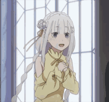
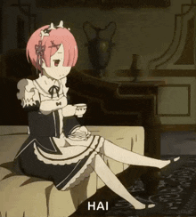
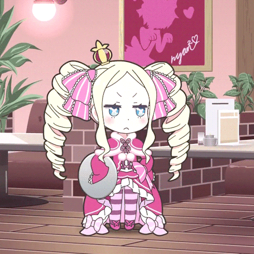
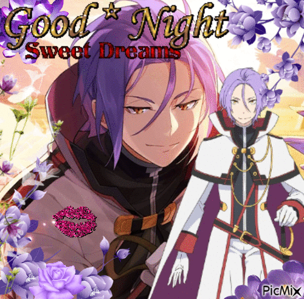
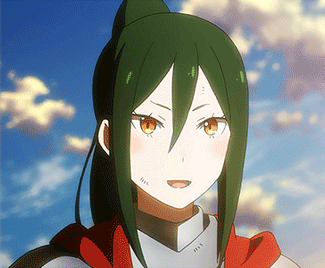
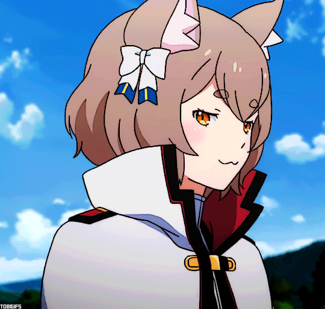
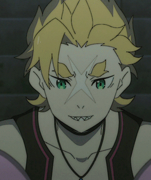
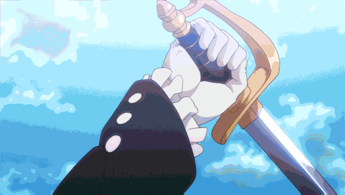
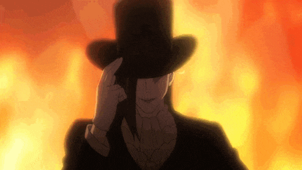

Re:Zero
Starting Life in Another World

Habilidade: Retorno pela Morte
Jovem japonês que se recusa a desistir, não importa quantas vezes precise morrer.

Magia: Gelo
Meio-elfa de alma pura com um passado misterioso ligado ao Santuário.
Raça: Oni (chifre único)
Uma das personagens mais amadas do anime. Sua devoção e força são inesquecíveis.

Magia: Vento (Fura)
Irmã de Rem. Perdeu seu chifre mas compensa com lealdade absoluta a Roswaal.

Tipo: Grande Espírito do Yang
Vive isolada na biblioteca há séculos, esperando por alguém. Passado profundamente trágico.

Título: Cavaleiro da Espada
O guerreiro mais forte do reino. Quase como se o universo o tivesse traído de tanto poder.

Magia: Seis Elementos
Rival inicial de Subaru com uma relação que evolui de forma surpreendente.

Habilidade: Visão da Medusa
Líder nata, estrategista e guerreira. Com um arco que ninguém esperava.

Magia: Água (cura)
Um dos melhores curandeiros do reino e fiel companheiro de Crusch.

Habilidade: Transformação em fera
Guarda o Santuário com raiva — até Subaru ir fundo em seus traumas.

Título: Espadachim Divino
Sua missão pessoal e história com Theresia são de partir o coração.

Magia: Todos os elementos
O mago mais poderoso do reino. Seus objetivos reais são um dos maiores mistérios.